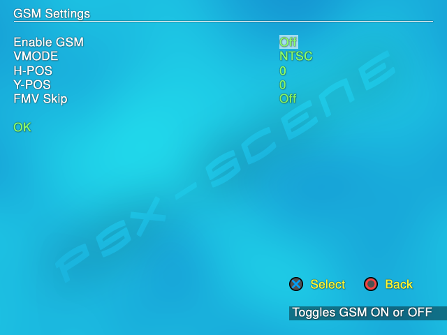

Graphics Synthesizer Mode Selector 0.36.R¶
Open PS2 Loader 0.9.3 features Graphics Synthesizer Mode Selector aka GSM 0.36.R version. GSM allows you to force videos modes in-game. GSM is disabled by default so you need to enable it if you want to force video modes [Press Configure GSM in the Game settings screen.].
GSM is not a general option anymore – like in 0.9.2 – but it’s per-game specific now. You can enable it for a game and let it disabled for another, enable progressive for one, not enable it for another because it’s not compatible etc… GSM settings will be saved in <game_ID>.cfg files (stored in CFG folder).
GSM screen :
Enable GSM : < OFF / ON > – pretty obvious : toggles GSM ON and let you access other settings.
VMODE : < NTSC / (…see list below…) / VGA 640×480i @60hz > – allow you to force the video mode selected in-game. Video modes list below.
HPOS : < less (up-to -100) / 0 / more (up-to 100) > – allow you to adjust the screen horizontally.
YPOS : < less / 0 / more > – allow you to adjust the screen vertically.
FMV skip : < OFF / ON > – allow you to skip Full Motion Videos.
OK : validate the changes made and return to Game settings screen.
Available video modes – list :
* NTSC
* NTSC-NI
* PAL
* PAL-NI
* PAL @60Hz
* PAL @60Hz-NI
* PS1 NTSC (HDTV 480p @60Hz)
* PS1 PAL (HDTV 576p @50Hz)
* HDTV 480p @60Hz
* HDTV 576p @50Hz
* HDTV 720p @60Hz
* HDTV 1080i @60Hz
* HDTV 1080i @60Hz-NI
* HDTV 1080p @60Hz
* VGA 640x480p (@60/72/75/85)
* VGA 640x480i (@60/72/75/85)
HDTV modes requires a component cable – while VGA modes requires a VGA cable (or an adaptor connected to a Component cable).
GSM settings in <game_ID>.cfg file :
Name - Description
$EnableGSM - Set to 1 if GSM is to be enabled, 0 or deleted if not.
$GSMVMode - Video mode for GSM to set
$GSMXOffset - X-offset for GSM to use
$GSMYOffset - Y-offset for GSM to use
$GSMSkipVideos - Set to 1 if videos are to be skipped with GSM, 0 or deleted if not.
It’s just for the record, let GSM deals with it. ;)